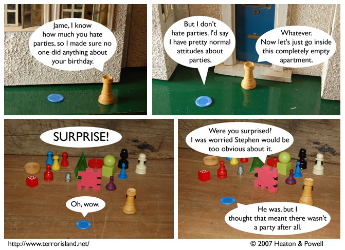

Strip #151
— Wednesday, May 30, 2007
The normal attitude to have about parties is approval
Notes, Thoughts, &c.
Ben’s Notes
So, Tinyfolk turned out to be awesome. I picked up his latest owlbum, Platapeasawallaland, which I’d say is his best stuff yet. If you like ukuleles and songs about owls, you should either buy it (cost: five dollars) or borrow it from me (cost: however much it costs to walk/drive/fly from where you live to where I live, and possibly back). I think you can listen to parts of it for free online somewhere too.
Lewis’s Notes
AT&T is to blame for these comments. They are taking a long time to get Internet back in my house, and I don’t like typing long comments for Ben to post via my cell phone.